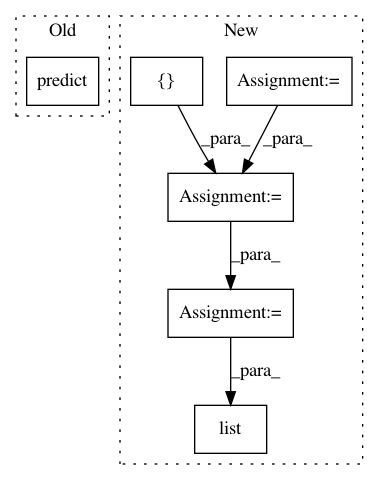

9b2f98b435d6b21a0f5d49c1a5a23c97e7357d6f,finetune/target_models/ordinal_regressor.py,OrdinalRegressor,predict,#OrdinalRegressor#Any#,46
Before Change
:param X: list or array of text to embed.
:returns: list of class labels.
return super().predict(X).tolist()
def predict_proba(self, X):
After Change
for _, start_of_doc, end_of_doc, label, _ in self.process_long_sequence(X):
if start_of_doc:
// if this is the first chunk in a document, start accumulating from scratch
doc_labels = []
doc_labels.append(label)
if end_of_doc:
// last chunk in a document
means = np.mean(doc_labels, axis=0)
label = self.input_pipeline.label_encoder.inverse_transform([means])
all_labels.append(list(label))
return all_labels
def predict_proba(self, X):
In pattern: SUPERPATTERN
Frequency: 3
Non-data size: 6
Instances
Project Name: IndicoDataSolutions/finetune
Commit Name: 9b2f98b435d6b21a0f5d49c1a5a23c97e7357d6f
Time: 2019-07-17
Author: matthew.bayer@indico.io
File Name: finetune/target_models/ordinal_regressor.py
Class Name: OrdinalRegressor
Method Name: predict
Project Name: CNuge/kaggle-code
Commit Name: 22f24471540decc49ce7e58c93c7be4d942cfab6
Time: 2018-10-19
Author: nugentc@uoguelph.ca
File Name: google_analytics/nn_predict.py
Class Name:
Method Name:
Project Name: IndicoDataSolutions/finetune
Commit Name: e9eb9d3cdef98f21f754b577b88dc259a9914ede
Time: 2019-07-17
Author: matthew.bayer@indico.io
File Name: finetune/target_models/regressor.py
Class Name: Regressor
Method Name: predict